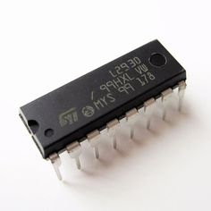
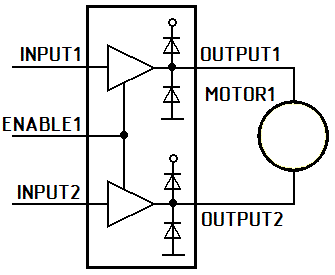
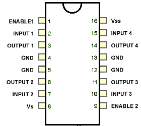
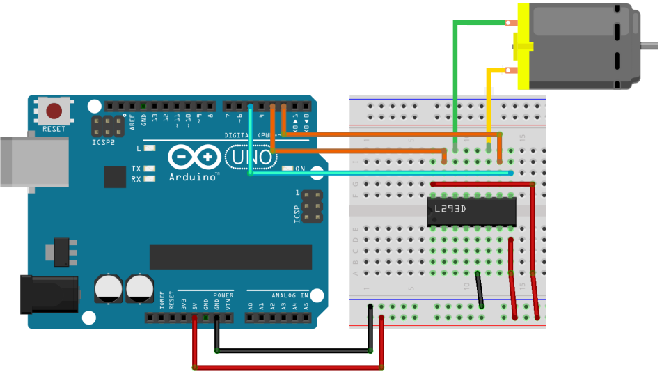

Драйвер двигателей L293D
Микросхема L293D является одной из самых распространенных микросхем, предназначенных для управления электродвигателями.

Рис. 1 - Внешний вид и назначение выводов микросхемы L293D
Характеристики микросхемы L293D
- напряжение питания двигателей (Vs) - 4,5...36 В
- напряжение питания микросхемы (Vss) - 5 В
- допустимый ток нагрузки - 600 мA (на каждый канал)
- пиковый (максимальный) ток на выходе - 1,2 A (на каждый канал)
- логический "0" входного напряжения - до 1,5 В
- логическая "1" входного напряжения - 2,3...7 В
- скорость переключений до 5 кГц.
- защита от перегрева
Устройство микросхемы L293D
L293D содержит сразу два драйвера для управления электродвигателями небольшой мощности (четыре независимых канала, объединенных в две пары). Имеет две пары входов для управляющих сигналов и две пары выходов для подключения электромоторов. Кроме того, у L293D есть два входа для включения каждого из драйверов. Эти входы используются для управления скоростью вращения электромоторов с помощью широтно-модулированного сигнала (ШИМ).
L293D обеспечивает разделение электропитания для микросхемы и для управляемых ею двигателей, что позволяет подключить электродвигатели с большим напряжением питания, чем у микросхемы. Разделение электропитания микросхем и электродвигателей может быть также необходимо для уменьшения помех, вызванных бросками напряжения, связанными с работой моторов.

Рис. 2 - Схема драйвера двигателей
Таблица 1
| № вывода | Обозначение | Назначение |
|---|---|---|
| 1 | Enable1 (En1) | Включает и выключает H-мост |
| 2 | INPUT1 (In1) | Управление первым H-мостом; |
| 3 | OUTPUT1 (Out1) | Подключение первого H-моста |
| 4 | GND (0V) | Земля |
| 5 | GND (0V) | Земля |
| 6 | OUTPUT2 (Out2) | Подключение первого H-моста |
| 7 | INPUT2 (In2) | Управление первым H-мостом; |
| 8 | Vs (+Vmotor) | Напряжение питания для мотором до 36 В |
| 9 | Enable2 (En2) | включает и выключает H-мост |
| 10 | INPUT3 (In3) | Управление вторым H-мостом; |
| 11 | OUTPUT3 (Out3) | Подключение второго H-моста |
| 12 | GND (0V) | Земля |
| 13 | GND (0V) | Земля |
| 14 | OUTPUT4 (Out4) | Подключение второго H-моста |
| 15 | INPUT4 (In4) | Управление вторым H-мостом; |
| 16 | Vss (+V) | Питание на 5 В |

Рис. 3 - Назначение выводов микросхемы L293D
Принцип работы драйвера
К выходам OUTPUT1 и OUTPUT2 подключим электромотор MOTOR1.
На вход ENABLE1, включающий драйвер, подадим сигнал (соединим с положительным полюсом источника питания +5 В). Если при этом на входы INPUT1 и INPUT2 не подаются сигналы, то мотор вращаться не будет. Если вход INPUT1 соединить с положительным полюсом источника питания, а вход INPUT2 - с отрицательным, то мотор начнет вращаться. Теперь попробуем соединить вход INPUT1 с отрицательным полюсом источника питания, а вход INPUT2 - с положительным. Мотор начнет вращаться в другую сторону. Попробуем подать сигналы одного уровня сразу на оба управляющих входа INPUT1 и INPUT2 (соединить оба входа с положительным полюсом источника питания или с отрицательным) - мотор вращаться не будет. Если мы уберем сигнал с входа ENABLE1, то при любых вариантах наличия сигналов на входах INPUT1 и INPUT2 мотор вращаться не будет.
Представить лучше принцип работы драйвера двигателя можно, рассмотрев следующую таблицу:
| ENABLE1 | INPUT1 | INPUT2 | OUTPUT1 | OUTPUT2 |
|---|---|---|---|---|
| 1 | 0 | 0 | 0 | 0 |
| 1 | 1 | 0 | 1 | 0 |
| 1 | 0 | 1 | 0 | 1 |
| 1 | 1 | 1 | 1 | 1 |
- Входы ENABLE1 и ENABLE2 отвечают за включение каждого из драйверов, входящих в состав микросхемы.
- Входы INPUT1 и INPUT2 управляют двигателем, подключенным к выходам OUTPUT1 и OUTPUT2.
- Входы INPUT3 и INPUT4 управляют двигателем, подключенным к выходам OUTPUT3 и OUTPUT4.
- Контакт Vs соединяют с положительным полюсом источника электропитания двигателей или просто с положительным полюсом питания, если питание схемы и двигателей единое. Проще говоря, этот контакт отвечает за питание электродвигателей.
- Контакт Vss соединяют с положительным полюсом источника питания. Этот контакт обеспечивает питание самой микросхемы.
- Четыре контакта GND соединяют с "землей" (общим проводом или отрицательным полюсом источника питания). Кроме того, с помощью этих контактов обычно обеспечивают теплоотвод от микросхемы, поэтому их лучше всего распаивать на достаточно широкую контактную площадку.
Подключение к микроконтроллеру Arduino Uno
Для подключения микросхемы L293D и мотора к микроконтроллеру Arduino Uno нужно выполнить определенные соединения (табл. 2).
Таблица 2
| L293D | Arduino Uno |
|---|---|
| 2 (In1) | 7 |
| 7 (In2) | 8 |
| 10 (In3) | 2 |
| 15 (In4) | 3 |
| 1 (En1) | 6 |
| 9 (En2) | 5 |
| 5 (GND) | GND |
| 8 (Vs) | 5 V |
| 16 (Vss) | 5V |
Пример такого подключения одного двигателя к Ардуино показан на рис. 4.

Рис. 4 - Пример подключения одного двигателя к микроконтроллеру Arduino Uno